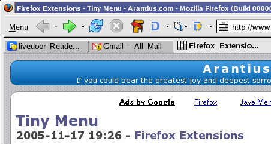

〜2006年9月下旬〜
Diigoツールバーを入れてからちょっとFirefoxの上部が分厚い感じがしてうっとうしいので、改善を試みる。
とりあえず右クリックしてCustomizeしてみると、
Diigoのアイコンも自由に移動できるので「戻る」とかのアイコンと並べてみた。
これでDiigoツールバーを非表示にできる。
さらにブックマークツールバーもキーワードとkeyconfigの組み合わせで、
ほとんど使ってないので非表示に。
ついでに Tiny Menuを入れたら、かなりすっきりした。

- About:
- a2png is a small program that converts plain text into PNG images.
と最近なぜかウィルス検知の通知がやってくるようになった。
その原因が今日たまたまわかった。
そろそろリムネットもspamのフィルタリング始めてないかなあと思い、
サポートデスクを見に行ったら、
「メールウィルスチェックサービスの開始について」
というお知らせを発見。
これかー。さっそくGmailでいつから来てるか確認してみると12日からだった。
日付けも合うな。ウィルスはGmailが黙って完璧にブロックしてくれていたから、
この通知は迷惑以外のなにものでもない。黙ってブロックしてくれ。
これでまた余計なフィルタリングしなきゃいけないじゃん。
Firstly for those who don't know, Ferret is a full-text search library which makes adding search to your application a breeze. It's much faster than MySQL full-text search as well most other search libraries out there. It allows you to do Boolean (+ruby + rails -jewelry) and phrase queries ("the quick brown fox") as well as some more unusual queries like fuzzy queries (misspelling~ matches mispeling or misspellng), wildcard queries (Aus?ral*), range queries (date:<=20050601) and a lot more. Ferret also now offers query result highlighting and excerpting.
いつのまにか化けるようになった。
数値文字参照のまま出てくるので、
通常のiCalフォーマット
に変えたら直った。
GCal側が対応したということか。あ、日本語化されたタイミングだったのかな。
さいたまの部分が化けるのは変わらないが、 ここは気にしないということで。
今日は OptionParser::getoptsの存在を知ったわけだが、 すでに時代はARGV.getoptsらしい。
% ruby -v -roptparse -e 'p ARGV.getopts("ab")' -- -a -b
ruby 1.8.5 (2006-09-27) [i386-linux]
{"a"=>true, "b"=>true}
ruby-devで報告したバグは1.8.5リリース以降に発生したものなので(CVSではすでに直ってる)、 安心して使える。今年の6月に追加されたので残念ながら1.8.4では使えない。
fastcgiみたいなもんだけど、やりとりはnamed pipeを使う。
最大のウリはapacheのモジュールは必要ないこと。特長のところに5回も出てくる。
速度をかせぐためにindex.cgiはCで書かれている。
ってことはつまりhttp serverを選ばないってことだな。
メールがきた。今回は Oblongular Number Spirals で、ruby-talkにも アナウンスがあった。
Code Golfって他の人の作品って見れないのかな？
まあ、見れるとカンニングというか改良される可能性があるしねえ。
ところで、 先日open-uriネタを書いたが ルールを見るとだめみたい。
You will be unable to import/require/include any modules or files in your solution. You have to write all the code yourself, and it has to be in the code file you upload.
cd ..以外にやりたいことがある人はpush-lineを使うといいよ。
% foo bar # 入力途中でcd ..するのを忘れたことに気づく % foo bar[\M-q] # ここで\M-qするとfoo barが一時的に退避される % cd .. # やりたいことをすると % foo bar # 自動的に復帰する
\M-q以外にも
% bindkey|grep push-line "^Q" push-line "^[Q" push-line "^[q" push-line "\M-Q" push-line
これだけ割り当てられてるようだ。でも^Qはttyに食われて使えないかな。
話題の新Google Readerを試した。
starがshareできるなんて機能は正直どうでもよくて、
やっぱdel.icio.usへポストとか、
まあこの際Google Bookmarkとの連携でもいいんだけど、
クリッピング機能が欲しい。
starだけじゃなあ。
使っていて感じたのはGoogle Readerの最大の利点は
既読が本当に読んだところまでで決まる点にあると思う。
何も気にせずにいつでもブラウザを閉じることができる。
最終的には操作性と軽さでやっぱLDRを使うかな。